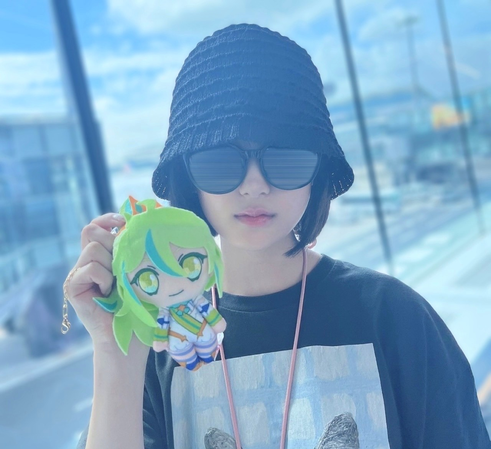

橘杏咲の立ち話もなんですから！ 第15回橘杏咲的“站着聊可说不完！” 第15回
皆さん、こんにちは🍂✨
大家好🍂✨
気がつけばもう10月。あんなに暑かった夏がすっかり遠ざかって、急に涼しくなりましたね。朝晩は肌寒いくらいで、慌てて長袖を引っ張り出しました。
一转眼就已经10月了。曾经那么炎热的夏天彻底远去，天气一下子就凉爽下来了呢。早晚甚至有点微凉，我赶紧把长袖衣服翻了出来。
私は秋が大好きなのでワクワクしてきました。秋冬服って可愛いんですよねぇ。
我超喜欢秋天，整个人都雀跃起来了。秋冬装真的好可爱呀。
果たして、長袖一枚で過ごせる時期はどのくらい続くのでしょうか…トレーナー1枚で外に出られるのが嬉しいから長く続いて欲しいよ〜
话说回来，能单穿一件长袖出门的时节到底能持续多久呢……单穿一件卫衣就能出门实在太爽了，真希望能多持续一阵子呀〜
私は早くも毛布にくるまる生活を始めています🛏️💭
我早就开启了裹在毛毯里的生活🛏️💭
皆さんも体調には気をつけてくださいね！
大家也要注意保重身体哦！
秋といえば読書の秋、芸術の秋、そして食欲の秋！最近はまたまた麺ブームが再来しています。夏はあまりラーメンを食べていなかったので、少し涼しくなってきた最近はついつい入ってしまう…。
说起秋天，就是读书之秋、艺术之秋，还有食欲之秋！最近我的面食热潮又卷土重来了。夏天没怎么吃拉面，最近稍微凉快下来，路过拉面店就忍不住拐进去……
私はカロリーが高そうなものを食べる時、絶対にカロリーを確認してから「こんなにカロリー摂取してる！くう〜！！」と言う罪悪感というか背徳感が気持ち良くて。やめられんです。
我在吃看起来高热量的东西时，一定会先看一眼卡路里，然后享受那种“我居然摄入了这么多热量！唔啊〜!!”的罪恶感，或者说背德感，觉得特别爽，根本停不下来。
最近はたまご蒸しパンのカロリーに驚きながら、気持ち良くモフモフ食べてました。
最近我还一边惊叹着鸡蛋蒸糕的热量，一边美滋滋地大口大口啃着软乎乎的蒸糕呢。
とにかく、秋は誘惑が多くて困っちゃいます〜
总之，秋天的诱惑实在太多，真是伤脑筋呀〜
まずはやっぱりこれ。
首先果然还是要说这件事。
TVアニメ「ばっどがーる」が最終回を迎えました！！👏🏻🥂
TV动画《坏女孩》迎来最终回啦!!👏🏻🥂
いやぁ、本当にあっという間でした。放送が始まったのがつい最近のように感じるのに、気づけば最終話。優谷優を演じられる時間はずっと楽しくて、ストレスなんてどこにもなくて。幸せで満ちていました…。
哎呀，真的过得好快啊。明明感觉开播才像是前几天的事，一眨眼就到了最终话。饰演优谷优的时光自始至终都无比快乐，完全没有一丝压力，心里满满的都是幸福……
最終回の台本をいただいた時、本当にアニメばっどがーるは一旦終わっちゃうのかと信じられず、いつも通り台本チェックして、いつも通りアフレコへ向かったのを覚えています。
我还记得拿到最终回台本的时候，简直不敢相信动画《坏女孩》真的要暂告一段落了，于是还是像往常一样核对台本，像往常一样去录音棚配音。
最終回もばっどがーるらしい、いつも通りの楽しい回だったのでそうだったのかもですね。でも、エンディング後のDパートは、流石にしんみり〜しちゃいました。優と涼、これからもずっと一緒にいなさい。どこまでもどこまでも…
或许也是因为最终回依然很有《坏女孩》的风格，是和平常一样欢乐的一集吧。不过片尾曲之后的 D-part，我果然还是忍不住鼻子一酸、感伤起来了呢。小优和凉，以后也要一直一直在一起哦，无论走到哪里都要在一起……
自分でOAを見て、涼といる時の優って増して可愛いな。なんて思っちゃいました。気を許しまくっている相手へのそれ、ずるい。可愛い。ワルい！💥
我自己看了播出后的正片，心想“和凉在一起时的小优，真是格外可爱呀”。那种对着完全敞开心扉的对象流露出来的样子，太犯规了！好可爱，好“坏”！💥
ばっどがーるが私にとって初めての主演作品だったこと、本当に幸せに思います！毎週のアフレコやオンエアを通して、アニメ制作に関わるすべての方々の情熱や愛を感じて、こんな素敵な現場ではじめての主演を経験できているという事実が夢のようでした！
我的第一部主演作品是《坏女孩》，真的觉得太幸福了！通过每周的配音和动画播出，我真切感受到了所有参与动画制作的工作人员们的热情与爱，能在这么棒的片场迎来人生第一次主演，简直像做梦一样！
そして優谷優というキャラクターに出会えたことは本当に宝です。最初から最後まで、こんなに楽しく演じられる子にはそうそう出会えないと思います😌毎回アフレコのたびに、原作の彼女たちがとっても生き生きしているからこそ、その表情や空気感をどう声で表現できるだろうと試行錯誤していました。試行錯誤を重ねる中で、優の表情を追いかけながら、私自身も少しずつ成長させてもらったように感じています。
而且能遇见优谷优这个角色，真的是我莫大的宝藏。从头到尾都能演得这么开心的角色，我想以后也很难再遇到第二个了吧😌 每次配音时，正因为原作里的她们都那么鲜活灵动，我总是反复琢磨该如何用声音表现出她们的表情与氛围感。在不断尝试和摸索中追随着小优的每一个神情，我感觉自己也随之一点一点成长起来了。
9月9日には優のお誕生日もお祝いできて嬉しかったです🐶🫶🏻担当させていただいたアニメキャラクターのお誕生日をキャストとして一緒にお祝い出来たのは初めてだったのでメチャメチャに嬉しかったです。
9月9日能给小优庆生也让我超开心🐶🫶🏻 这是我第一次以配音演员的身份，一起为自己配音的动画角色庆祝生日，所以开心得不得了。
Xにも載せたのですが、当日、お仕事とお仕事の間に少しいい感じの時間ができたので、急遽アフタヌーンティに行って優のお祝いお茶会をしてきました。
我在 X 上也发过，当天正好在两份工作之间空出了一段刚刚好的时间，于是临时决定去吃下午茶，给小优办了一场庆生茶话会。
ご馳走するので一緒に優谷さんのお誕生日をお祝いしてくれないか。といきなりお茶に誘ったら来てくれた優しい友人に感謝です🤍お陰様で美味しいアフタヌーンティーセットで優谷さんのお誕生日をお祝いできました。
当时突然约朋友说“我请客，能陪我一起给优谷同学过生日吗？”，非常感谢二话不说就答应赴约的温柔朋友🤍 多亏了她，我才得以用美味的下午茶套餐为优谷同学庆祝了生日。
SNSでも皆さんがたくさんお祝いしてくださって、優谷さんはとっても幸せ者ですね〜
在社交平台上大家也送上了好多祝福，优谷同学真是个超级幸福的孩子呢〜
これからも健やかに育つのよ〜〜
今后也要健健康康地成长哦〜〜
そして！天狼群としても大きな出来事がありましたねっ！
而且！作为“天狼群”也有一件大事发生了呢！
ついに1stアルバム「KING OF EVIL」が発売されました📀✨
首张专辑《KING OF EVIL》终于正式发售啦📀✨
全曲、楽しすぎる。あまりにも「ばっどがーる」過ぎるんです。全員のソロ曲もカバー曲も全て、全て最高なので余すことなく聴き尽くしてください。優谷さんのソロ曲「超らぶふぉーえばーもあ」は愛の勢いがすごい、ぶち上げ曲です。RECメチャメチャエネルギーを使ったのを覚えています…。大変だけど楽しい曲。
每一首歌都太好玩了，简直太有《坏女孩》的味道了。全员的个人曲也好，翻唱曲也好，全部、全部都棒极了，请大家一首不落地听个够！优谷同学的个人曲《超らぶふぉーえばーもあ》是一首爱意势不可挡、嗨翻全场的燃曲。我还记得录音时耗费了超多能量……虽然唱起来很费劲，但真的超级过瘾。
同時にビジュアルブック「雷轟鳴牙」も発売され、アニメ放送終了後もとっても盛り上がってます🎶これからちょこちょこイベントもありますしねっ
与此同时，官方视觉书《雷轰鸣牙》也同步发售了，动画播完之后热度依然高涨🎶 接下来陆陆续续还会有各种活动呢！
しかも10月からやんちゃ過ぎる再放送も！笑
而且10月起还要开启调皮到不行的重播！（笑）
まだまだばっどがーるとばいばいするまでは時間がありそうですね。
看来离跟《坏女孩》说拜拜，还有好长一段时间呢。
これからも応援よろしくです〜！
今后也请多多支持啦〜！
そしてなんといっても9月での大きなイベントといえば、インド。ナマステ！
而要说9月最重磅的大事件，那无论如何都得是印度啦。Namaste！
初めてのお仕事での海外が、まさかのインドでした🇮🇳💫
我人生中第一次因公出国，目的地居然是印度🇮🇳💫
お仕事として行く最初の海外がインド！？と意外な場所にとてもびっくりしたのですが、結果的にものすごく楽しくて、忘れられない体験になりました！
一开始听到“第一次出国工作居然是去印度!?”，被这个出人意料的地点惊到了，结果这趟旅程却好玩得不得了，成了一次终生难忘的体验！
とにかくご飯が全部おいしい！！カレー、美味しすぎる。チキンカレー発祥と言われているお店でチキンカレーを食べたのですが、あまりにも美味しかったです。ナンの中では特にチーズナンがすっごく美味しくて！！あれ、日本でも食べられたらいいのになぁと思いました。
总之那里的饭菜全都超级好吃!! 咖喱美味到犯规！我们去了一家据说是鸡肉咖喱发源地的店里吃了鸡肉咖喱，实在太绝了。各种馕里面尤其是芝士馕好吃到飞起!! 当时就心想，要是在日本也能吃到那个就好了呀。
他のお料理も美味しかったです。基本全部スパイシーでしたが…。その中でも、特にケンタッキーが衝撃的においしくて。日本に帰ってきてからも、オルケリア全員口を揃えてあれまた食べたいって言っています。本当に美味しかった。たくさんの食事の思い出ができました😽🌟
其他菜肴也都很美味，虽然基本上全都是香辣口味的……而在其中，尤其是肯德基好吃得让我大受震撼！回到日本之后，ORCHERIA 全员还异口同声地说“好想再吃一次那个啊”。真的太好吃了，留下了好多关于美食的回忆😽🌟
街の風景も驚きの連続で、ホテルからイベント会場に向かう車の中から見える景色が毎回観光気分。道路の脇には野良犬や野良牛、さらにリスまでいて。日常の風景にそういう光景があるのが不思議で面白くて、ずっと窓の外を眺めては「うしうしうし！！」「平たい犬！！」と騒いでいました。
街头的风景也是惊喜不断，每次坐车从酒店去活动会场，窗外的景色都让我像在观光一样。马路边上有流浪狗、流浪牛，甚至还有松鼠！这种景象竟然就自然地融在日常风景里，既奇妙又有趣，我一路盯着窗外大呼小叫着“牛牛牛!!”“扁扁的狗!!”。
ライブも、現地の方々の熱量がすごくて、とても盛り上げていただいて嬉しかったです。緊張とかも特になく、楽しい〜！でいっぱいでした。
Live 现场当地观众的热情也高得惊人，把气氛炒得超级热烈，让我开心极了。我完全没什么紧张感，满心都是“太好玩啦〜！”。
現地の人たちの笑顔もとても印象的で、言葉はあまり通じなくてもエネルギーと温かさが伝わってきて、なんだかこちらまで元気をもらえました。全部が刺激的で、全部が新鮮で…とにかく本当に楽しかった！💗
当地人的笑容也给我留下了很深的印象，即使语言不太相通，那份活力与温暖也能真切地传递过来，连我也跟着元气满满起来了。一切都充满刺激，一切都无比新鲜……总之真的太快乐了！💗
何より、元気で楽しく日本に帰ってこられたことに感謝です。初めてのお仕事海外がインドだったのはきっと偶然じゃなくて、これから挑戦していくための大きな一歩だったんだろうなぁ、なんて。また行きたいな〜
最重要的是，很庆幸能平平安安、开开心心地回到日本。人生第一次海外工作就去了印度，这一定不是偶然，而是迈向今后种种挑战的一大步吧——我忍不住这样想着。好想再去一次呀〜
結局一回も使ってないデカ真っ暗サングラスです。浮かれている橘と付き合わされるミー
这就是最后一次也没用上的超大漆黑墨镜。兴奋得飘飘然的橘，和被迫陪着胡闹的小 Meteor

あっ、そうだ。10月といえば….そう、10月12日は私の誕生日ですっ🎂🤍ついに21歳になります。大人になりたてのハタチから、いよいよ本格的に大人ロードに入ったのだと実感してしまいそうで怖いです。ドキドキ。でもやっぱり誕生日って特別な日ですよね、今年は自分にどんなご褒美を買ってあげようかな〜るんるるん
啊，对了。说起10月……没错，10月12日就是我的生日啦🎂🤍 我终于要满21岁了。从刚成年的20岁迈出去，感觉一下子就要真切体会到自己正式踏上大人之路了，好紧张又有点怕怕的，心怦怦直跳。不过生日果然还是特别的日子呀，今年该给自己买什么奖励好呢〜乐滋滋〜
そして同時に、大学の秋学期もスタートします。実は夏の成績発表で単位をしっかり取れていて、かなりホッとしています。えらいでしょう😼😼
与此同时，大学的秋季学期也要开始了。其实夏天出成绩的时候我稳稳拿下了学分，大大松了一口气。很厉害吧😼😼
秋学期、頑張りたい。単位をほぼ取り尽くすという気合いで戦いへ参ります。その前に、履修選抜。通っているといいな。お願い、おね、がい。
秋季学期也想好好努力！我要怀着把学分几乎一网打尽的气势奔赴战场。不过在此之前还有选课抽签。希望能选上啊，拜托了，拜、托、了。
あ、そういえば今回はいつもある私の謎語りパートがないな〜と思ったので、最近考えたことを少しだけ。
啊，说起来我突然发现，这回居然少了惯例的“橘杏咲神秘碎碎念环节”〜所以稍微聊聊我最近想到的一件事吧。
ばっどがーる第10話で、優が「苦手なもの＝理不尽？」と言うシーンがありましたよね。あれを観ていて、もし私も同じように一つだけ1番苦手なものを挙げるとしたら、やっぱり理不尽なのでは。と考えていました。
《坏女孩》第10话里，有一幕小优说“讨厌的东西＝不讲理？”对吧。看那一幕的时候我就在想，如果让我同样只举出一个最受不了的东西，果然也是“不讲理”吧。
納得できないことを無理に飲み込まなきゃいけない瞬間とか、筋の通っていない話を押しつけられることとか…そういうのが一番苦手かもしれません。「何をされたら怒る？」と聞かれたら、まず最初に思い浮かぶのはこれかもって。
像是明明无法接受却被迫硬吞下去的瞬间，或是被强行灌输毫无道理的说辞之类……我最应付不来的大概就是这种事了。要是有人问我“别人做什么会让你生气？”，我第一个想到的可能就是这个吧。
やっぱり何事においても、ちゃんと考えることや議論することって大切なんだな、と！赤の女王も歩みを止めてはならぬって仰っていたし、学び続けなくちゃなぁ。お勉強しよう、文字に触れよう、この気持ち、忘れないでいよう…
果然无论面对什么事，认真思考和好好讨论都是很重要的呢！赤红女王也说过不可停下脚步嘛，我必须一直学习下去才行呀。要好好读书、多接触文字，这份心情可千万不能忘记……
さて、今月もここらで…。
好了，这个月也差不多就写到这里……
今月の目標はズバリ！
本月的目标就是——
「健康第一で、毎日をちゃんと楽しむ」
《健康第一，认真享受每一天》
なんかまた似たやつ！！！って思うかもしれませんけども！最近風邪をひいていなくて(当社比)少し忙しさが入り乱れるとすぐに体調を崩す人なので、最近崩していなくて逆に怖いです。でももしかしたら強くなっているのかも…。ならいいの、でも気をつけます👍🏻
大家可能会想“怎么又是差不多的目标!!!”吧！但我最近都没感冒（跟以前的自己比），我原本就是稍微一忙乱就立刻生病的体质，最近一直没病倒反而让我有点害怕了。不过说不定是我变强壮了呢……那样当然最好，但我还是会多加小心的👍🏻
秋学期も始まると言うことで、仕事も学校も大切だけれど、無理をしすぎず！自分の心と体を大事にしながら過ごしたいです。楽しく笑って元気に21歳を迎えたいと思います。
随着秋季学期开学，虽然工作和学业都很重要，但绝不能太勉强自己！我想好好爱护自己的身心，稳稳过好每一天，开开心心地笑着、元气满满地迎接21岁的到来。
ここまで読んでくださり、本当にありがとうございました！
非常感谢大家一直读到这里！
秋は美味しいもの、楽しいことがいっぱいなので、皆さんも一緒に楽しみながら元気に過ごしましょう〜！
秋天有数不清的美食和乐事，大家也一起高高兴兴、元气满满地度过这个秋天吧〜！
ではっ🔆
那么下次见啦🔆
橘さんに質問！向橘小姐提问！
Q：秋、色々な秋がありますがズバリ橘さんの〇〇の秋を教えてください！（福岡県 ・ ナンバーズ）
问：秋天有各种各样的“〇〇之秋”，请问橘小姐的“〇〇之秋”究竟是什么呢？（福冈县·ナンバーズ）
ナンバーズさん、ご質問ありがとうございます！！
ナンバーズ，感谢你的提问!!
…ってあっ！今回のコラム冒頭でこのお話しちゃったぁ！！！となっています！
……呃啊！我现在整个人都在想“这回专栏一开头我就已经聊过这个话题了呀!!!”
じゃあ、食欲の秋以外の秋で考えてみよう…。食事以外だと、読書の秋！に、したいと思っています！！
那我就试着想一个“食欲之秋”以外的秋天吧……除了吃以外的话，我想度过一个“读书之秋”!!
最近ゆっくり読書する時間を設けられていない、いや、設けようとしていないので、試みてみようと思います。いや、やります。
最近都没怎么抽出时间静下心来读书——不对，是压根没试着去抽时间，所以打算挑战一下。不，我一定要做到！
今まで読んでこなかった名作にも触れてみたいですね。色々探してみよう！
也想接触一些至今为止还没读过的名著呢，来好好搜罗一番吧！
おすすめの本とかあったら私にこっそり教えてください。とここでひっそり言っておきます。
要是大家有什么推荐的书，请悄悄告诉我哦——我就在这里小声说一句。